SPRINT #1: Democrat and Rochester Mobile Redesign
In this UI sprint, students were tasked with redesigning a webpage for a photography collection released by Democrat and Chronicle. The goal was to create a mobile-friendly design that better catered to users and aligned with the brand's image.
Original Design by D&C:
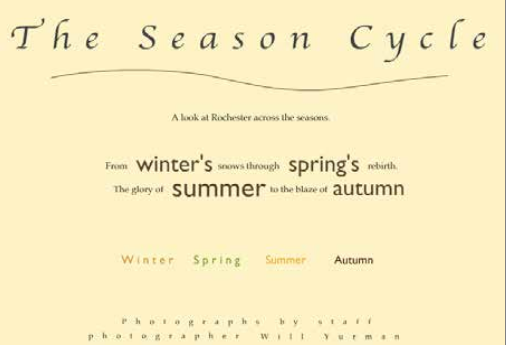
Problems with the Original Design:
- Harshly contrasting font sizes make it hard to read.
- Colored text is difficult to read.
- Lacks alignment with Democrat and Chronicle's brand styling.
- No photos are included, despite being a photography collection.
Democrat & Chronicle's Current Website for Style Reference:
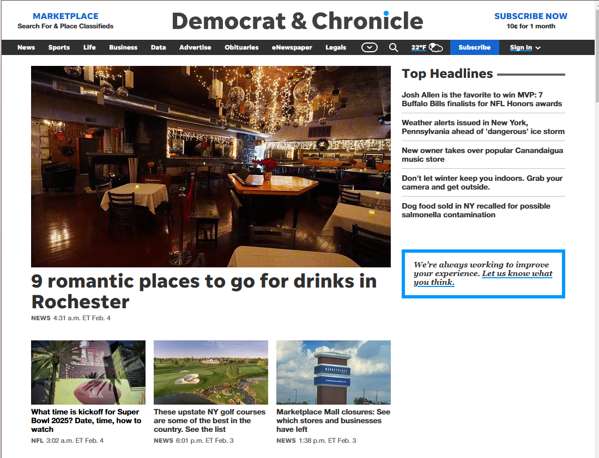
- Uses blue accent colors.
- Features Helvetica Neue and PT Serif fonts.
- Modern and clean design.
My Redesign for Mobile Screens:
- Utilizes blue accents from the D&C logo.
- Modern design with Helvetica Neue, PT Serif, and an accent font.
- Focuses on photography with a clear call-to-action button.
Preliminary Sketches and Wireframes:
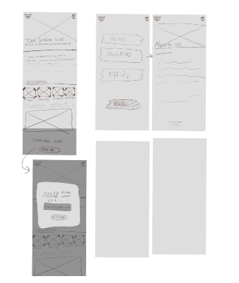
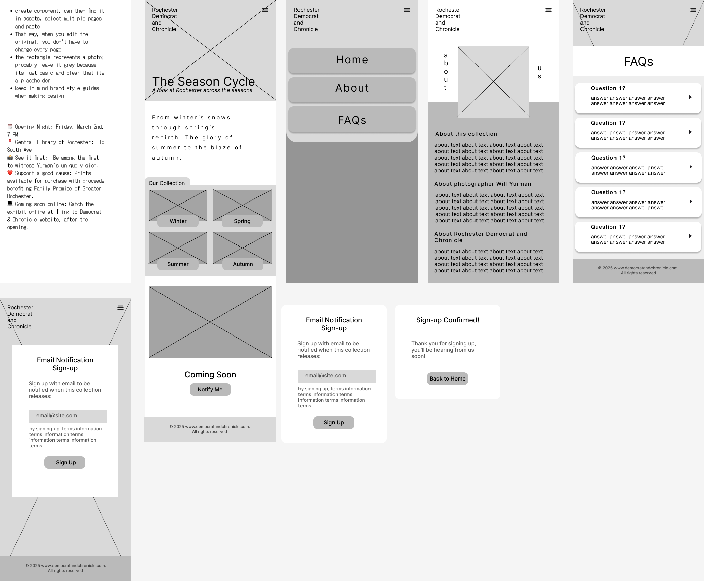

SPRINT #2: Animal Crossing Error 404 Page
In this UI sprint, students were asked to design a 404 error page for an organization of their choice in both desktop and mobile forms.
This assignment has an emphasis on UX writing, focusing on how a 404 screen can reflect an organization's personality and tone.
Animal Crossing New Horizons Site Page
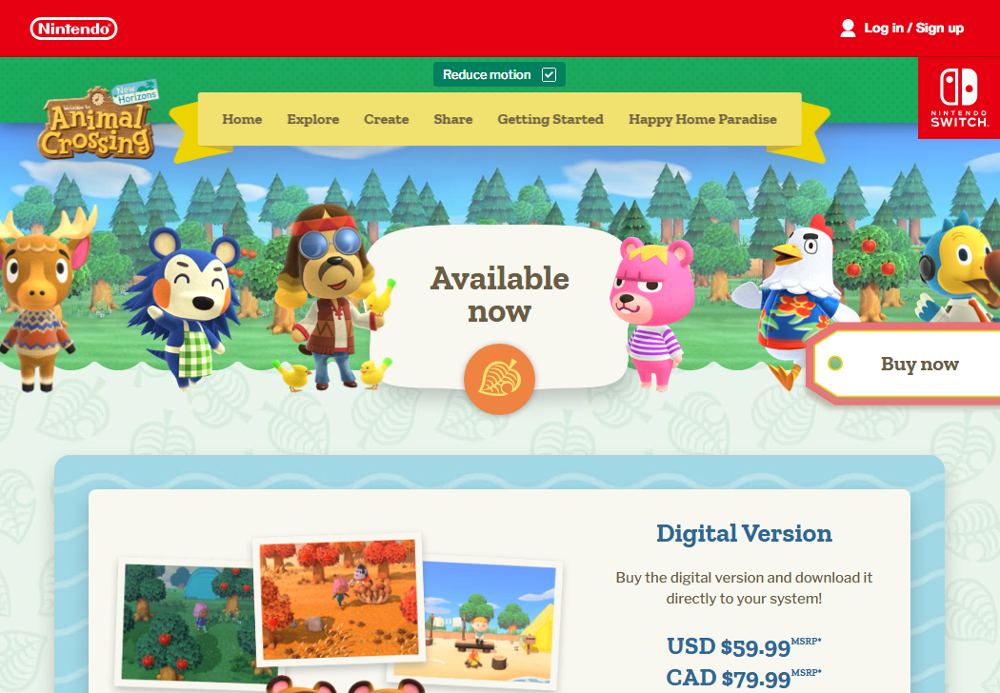
Since this sprint allowed me to take a look at any organization of my choice, I decided to take a look at the Animal Crossing New Horizons site because I have such fond memories of the game style.
Creating a Style Guide
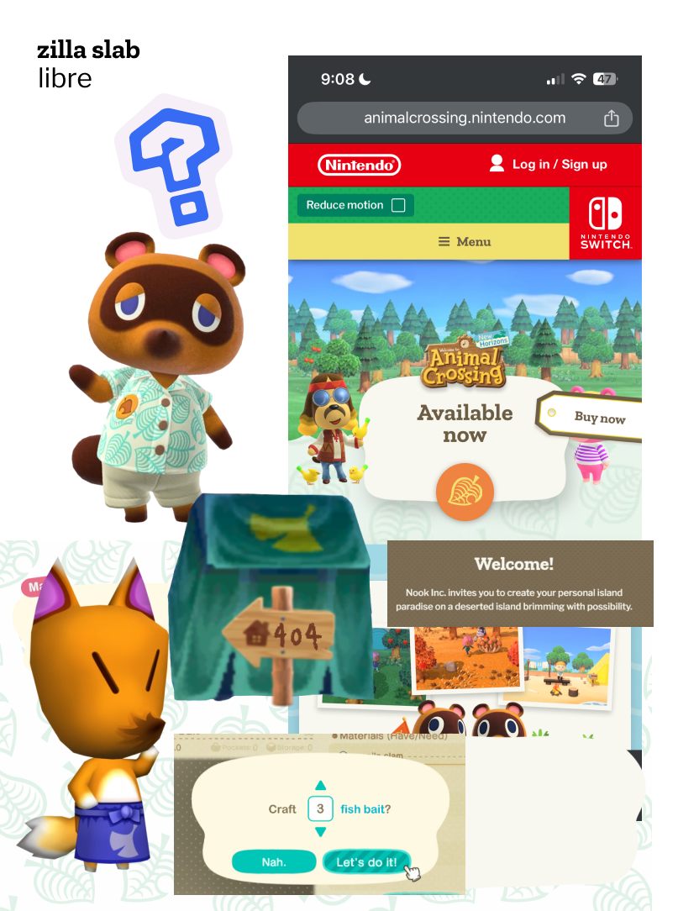
Based on the current website, I started developing an inspiration board of elements that are important to the branding of the organization. This included finding the fonts that are used, UI element styles, and also generating some ideas of my own.
I thought about having a mascot like Tom Nook on the 404 page, keeping the tone friendly and familiar to the target audience.
In the end, I decided to go with Redd, the fox character in the bottom left corner. He symbolizes mischief in the Animal Crossing games, and he would be a thematically appropriate character to have on a 404 page.
Creating the Redd 404 Design
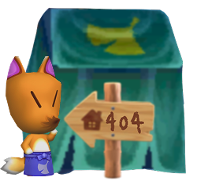
Since there were no existing Animal Crossing 404 page assets, I took it into my own hands to create an original design in Procreate. I picked up a model of Redd, a model of his tent, and a model of an in-game sign and added the "404" text onto it. For the actual error 404 message, I modeled the dialogue box after the in-game UI to create a familiar look.
Error 404 Message: What to say?
At first look, an error 404 page seems like it should be simple. However, a lot of people fail to consider how an error 404 page content changes based on organization personality as well as the target audience's needs.
Since the target audience of this organization is young kids, I decided to keep the error feedback short and sweet. I also made the 404 message tone playful, like it was Redd speaking to the user. This way, the user feels less frustrated and is guided by a familiar character.
On the desktop version, I made a stylized button that prompts users to go back to the homepage.
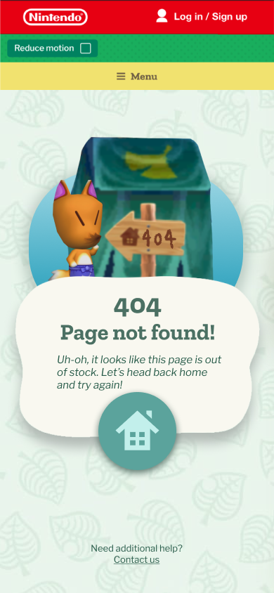
On the mobile version, I created a button that is larger and easier for thumbs to tap with an icon indicating that it will send users to the homepage.
Reflection
Overall, I feel like I learned a lot about tone and UX writing through this sprint. It helped me to think more about text content and how it too can be branded, similar to graphic designs.
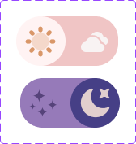
SPRINT #3: Toggle Design - Day/Night Mode Switch
In this UI sprint, I was tasked with designing a toggle switch that turns something on and off. I decided to create a day/night mode toggle for an online shopping website, inspired by my mom's experience shopping at night. The goal was to design a user-friendly toggle that allows users to switch between day and night modes seamlessly, reducing eye strain during nighttime browsing.
Project Brief
The target audience for this project is online shoppers, particularly those who shop at night. Many users, like my mom, find it straining to browse brightly lit websites in the dark. This toggle switch allows users to switch to a darker theme, making the shopping experience more comfortable during nighttime.
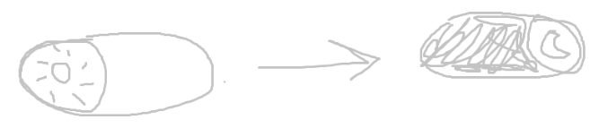
Design Process
I started by sketching out ideas for the toggle switch, focusing on intuitive icons (sun and moon) and a classic toggle layout. The toggle is placed in the navbar for easy access, and I made sure it was large enough to be noticeable and easy to use.
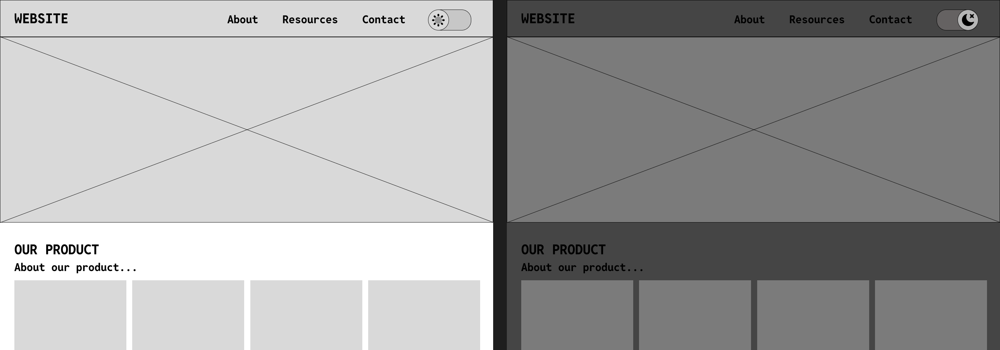
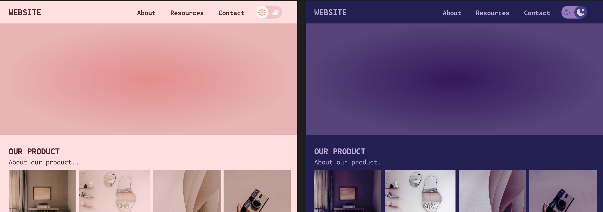
Wireframes and Prototypes
I created a medium fidelity mockup to demonstrate how my button works.
Key Features
- Intuitive Icons: The toggle uses sun and moon icons to clearly indicate the current mode (day or night).
- Accessible Placement: The toggle is placed in the navbar, making it easily accessible from any page.
- Animation: The toggle includes smooth animations to enhance the user experience.
- User-Friendly Design: The toggle is large and easy to click, ensuring usability on both desktop and mobile devices.
Reflection
This project was a great learning experience. I enjoyed experimenting with different color schemes for the day and night modes and exploring Figma's animation features. One of the challenges I faced was deciding on the default state of the toggle and how to clearly indicate the current mode to the user. In future sprints, I hope to continue improving my skills in Figma animations and explore more advanced interaction design techniques.

 View Figma Prototype
View Figma Prototype